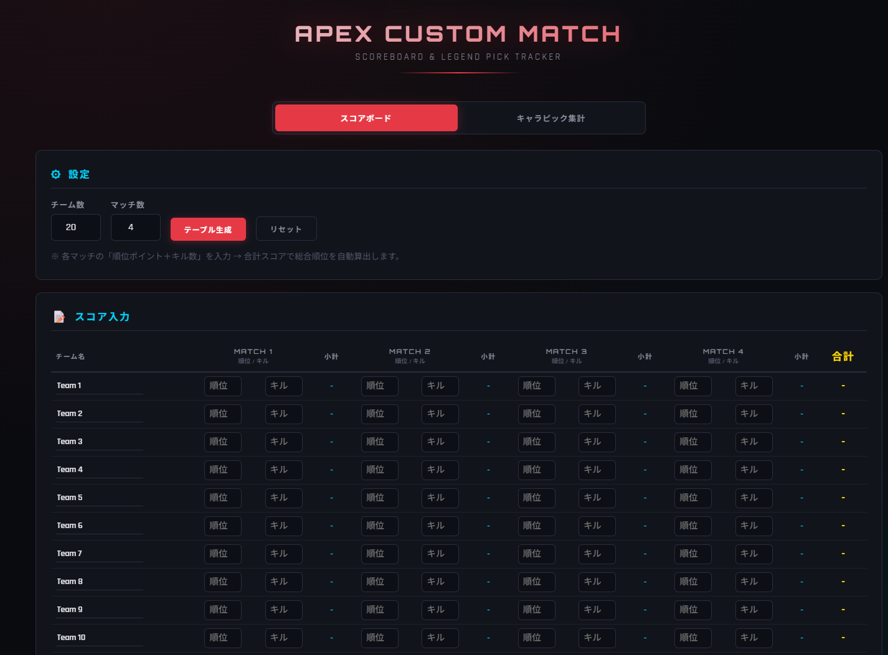
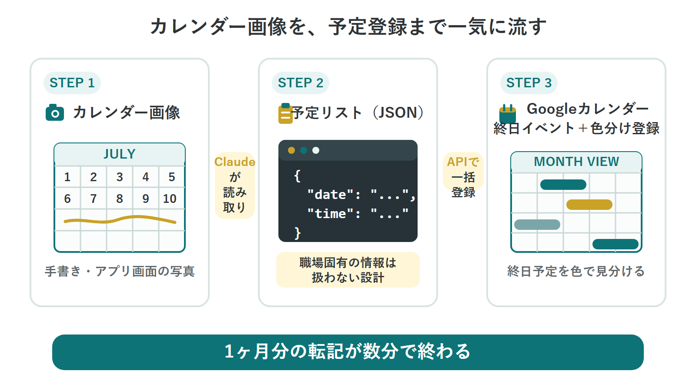

SVC_01
AI × Notion Workflow Design
I build operational foundations, AI-supported workflows, and context-management systems designed for continued day-to-day use.
AI Workflow Design / Creator Tools & Character IP
I design AI-supported workflows and operational systems for streamers and creators. As a creator and developer who builds tools for my own daily use, I bring a practical, hands-on perspective to every project.
Imperial SEED is an independent, one-person studio run by Somari.
Alongside streaming on Twitch and YouTube, selling LINE stickers, and developing original character IP, I design AI-supported workflows with tools such as ChatGPT and Claude and build operational systems in Notion.
My strength is designing from the perspective of systems that must work in day-to-day use. Rather than relying on theory alone, I approach client workflows with the same mindset I bring to tools I use myself every day.
Areas of Practice
From planning and design through implementation and operations, support can be tailored to the scale of the project, from one-off consultations to ongoing work.
I build operational foundations, AI-supported workflows, and context-management systems designed for continued day-to-day use.
I create web tools for real streaming workflows, including custom-match scoring, broadcast overlays, and OBS control panels.
I support OBS automation, custom broadcast panels, and technical problem-solving with practical streaming experience in mind.
I support character and LINE sticker projects from planning and production through registration for sale.
Projects I have planned, built, and operated myself.

A standalone HTML tool for custom matches with up to 20 teams. It automatically calculates kill and placement points, includes character-pick tracking, and has been used in a custom match hosted by a former professional player.
A speech-recognition, translation, and subtitle system built with Whisper and the DeepL API. I also implemented its WASAPI integration and VAD tuning.
A 13-file system for sharing context across multiple AI tools. It also includes a reusable workflow for syncing between Notion and local files.

A workflow that uses AI to read handwritten or app-based calendar images, convert schedules into JSON, and batch-create color-coded all-day events in Google Calendar. It is designed not to process workplace-specific information.
Multiple LINE sticker series based on cat characters. I manage the process end to end, from planning and production through store registration and sales.